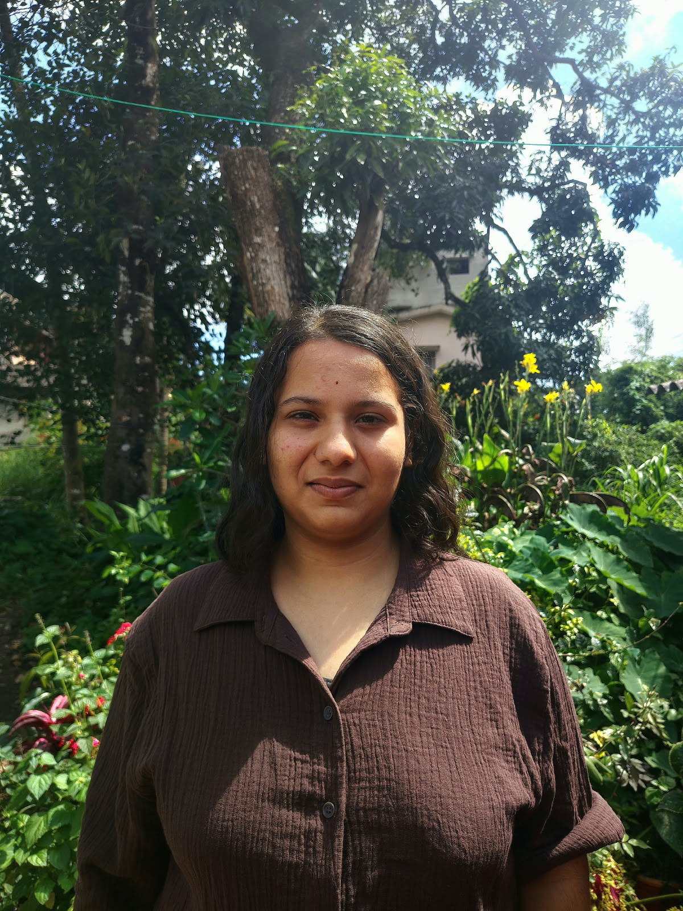

Hackathon · Runs locally
CardioMap 3D
A cardiovascular risk prediction application developed for a hackathon. The application runs locally and displays prediction results.
Visit my GitHub ↗Hi, I'm Ankitha — an engineering student exploring software development, backend technologies, and AI applications through projects, experimentation, and hackathons.

I'm pursuing a B.E. in Information Science Engineering at East West Institute of Technology, Bengaluru. I'm interested in software development and learning how technology can solve practical problems.
I learn by experimenting, building prototypes, collaborating with others, and improving my work along the way. I'm growing my technical skills through coursework and projects.
Technologies I've studied or used. I'll update this section as I continue learning.
Projects built or explored through hackathons and hands-on learning.
A cardiovascular risk prediction application developed for a hackathon. The application runs locally and displays prediction results.
Visit my GitHub ↗A career-readiness project built using Lovable as part of a hackathon.
View repository ↗An exploratory hand gesture recognition prototype focused on an accessibility-related use case.
Explore my GitHub ↗Interested in internships, hackathons, collaborative projects, or connecting with fellow developers? Feel free to reach out.